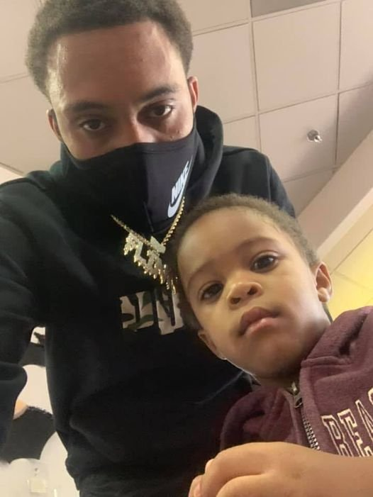

Timeline photos
Tyler Flinn was murdered in Fairlawn. This is not only a tragedy on a personal level, it points out the systemic tragedy that is the City of Akron's lack of leadership on poverty and it's residual effects of violence.
Now it's spilling over into Fairlawn. It's their first murder since 1978.